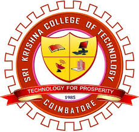

Key Competencies
Process Improvement
Leadership
Problem Solving
Report Writing and Presenting
Critical Thinking Skills
Communication Skills
Strong Interpersonal Skills
Proactive and Self-Motivated
Organizational Skills
Technical Skills
Programming Languages: C++, Java, MATLAB (basics)
Front End: HTML, CSS, JS (basics), React JS
Projects
VS Tunes: Front End Development using HTML, CSS and JavaScript. It is a music application.
SAN TRACKS: Front End Development using React JS.
Certifications
_page-0001.jpg)
NPTEL - Effective Writing (Passed with Elite Certificate)

MATLAB Onramp - Self-paced training course
Education

Sri Krishna College of Technology - B.E. Electronics and Communication Engineering
The Oxford Continental Higher Secondary School - Higher Secondary Education

Gurukulam Matriculation School - Secondary Education
Extracurricular Activities
Class Representative - Sri Krishna College of Technology
Joint Secretary - Rotaract Club of Sri Krishna College of Technology
Secretary - Art Club of The Oxford Continental Higher Secondary School
House Captain - Gurukulam Matriculation School
Performed as Master of Ceremony for multiple events